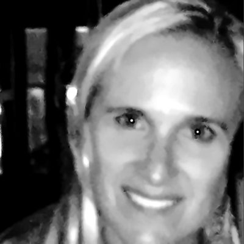
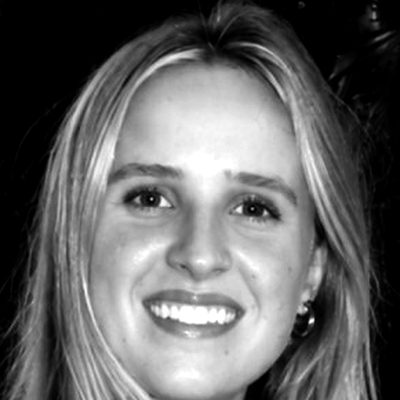

System migration
Moving you from legacy or desktop accounting (such as Sage) to cloud platforms like Zoho Books or Xero, with full history carried over and checked against the old system.
Learn more →Thornbird · Clear numbers, considered decisions
We're a hands-on finance partner for owner-led businesses, trusts and property groups. We move your books onto modern cloud systems, keep them accurate every month, plan your tax ahead of time, and give you the CFO-level insight to make confident decisions, without the cost of a full-time finance team.
No nasty tax surprises.
We plan the surprises out of your tax affairs, before they happen.
Plan ahead with usWhat we do
Moving you from legacy or desktop accounting (such as Sage) to cloud platforms like Zoho Books or Xero, with full history carried over and checked against the old system.
Learn more →Monthly processing, bank reconciliations, VAT, and clean management accounts you can trust.
Learn more →Structuring and timing decisions for companies, trusts and individuals, including capital gains, trust distributions and annual tax positions, done in partnership with your tax adviser.
Learn more →Budgets, cash-flow forecasts, multi-entity reporting, debt and funding plans, and a finance voice at the table when it matters.
Learn more →CFO-level finance for small businesses from R1,650 a month: a financial blueprint designed once, then cash forecasts, alerts and answers on your phone every week.
Learn more →System migration · How we work
Leaving desktop or legacy accounting doesn't have to mean starting from scratch or trusting a rough import. We move your chart of accounts, opening balances and full transaction history from systems like Sage into Zoho Books or Xero. Then we check the new ledger against the old one, year by year, before we call it done. You get a clean, budget-ready system, plus reporting you can rely on from day one.
Bookkeeping & accounting
Good decisions start with numbers you can trust. We keep your books up to date in Zoho Books or Xero, check every bank line rather than relying on automatic rules, and reconcile each account to the bank balance. Whether you run one company or several across different currencies and countries, you get accurate records and clear monthly reports, so you always know where your cash and profit stand.
Tax planning
No nasty surprises: we plan them out before they happen.
The biggest tax savings are decided before a sale, distribution or year-end, not after. We model the options in plain numbers. That covers when to sell, how gains and income flow through a trust, and who should carry them. We bring in your existing tax adviser to confirm, so decisions are based on clear workings, not guesswork.
Strategic finance / fractional CFO
We work alongside owners and boards as a fractional finance partner. We connect your long-term goals to the numbers that drive them: where cash really comes from, what the business can afford, and the steps that get you to where you want to be. We build clear forecasts and debt and funding plans, test the big decisions before you make them, and then track progress every month so the plan stays on course as things change.
Why us
We combine accounting, systems and strategy in one place, set up for multiple entities and currencies, and every number is checked back to its source.
Finertecture, by Thornbird. Not every business needs, or can afford, a full-time CFO. So we built Finertecture: the springbok’s leap, in your pocket. It brings Thornbird’s financial architecture to small businesses at a price they can afford, because every business that survives and grows creates jobs for South Africa’s youth. Read the Finertecture story →
Our team
A family business: here is why Adrian started Thornbird in 2011 and built Finertecture.

Business Administration
Nada Funkey runs the business side of Thornbird, keeping its administration organised and running smoothly. She also runs her own businesses within the Funkey Villas brand portfolio.
LinkedIn
Associate, Legal and Compliance
Saša Funkey heads legal and compliance at Thornbird, looking after NDAs, statements of work, data handling and a clear record of decisions on every engagement. She is in her final year of a BBusSc in Finance with Accounting at the University of Cape Town, where she has made the Dean’s List twice, and she is sitting CFA Level I in February 2027. She also co-founded Student Ledger Services, which places accounting students in paid roles with small businesses.
LinkedInAssociate, Technology and System Migrations
Aleks Funkey leads technology at Thornbird, overseeing the business’s systems, its system migrations and its technology partners. He is studying for a BA in Business Administration at IU International University of Applied Sciences. Since 2021 he has also run brand and marketing for the Funkey Villas Collection, including its websites and digital channels.
LinkedInAssociate, Customer Relations, Reporting and Communication
Zoran Funkey looks after Thornbird’s client relationships. He packages the reporting products and services the business provides and delivers them to clients, with solutions tailored to what each one needs. He is studying for a Bachelor of Commerce at Emeris University while playing for the University of Cape Town’s first soccer team, and he brings the discipline and teamwork of high-level sport to his client work.
LinkedIn